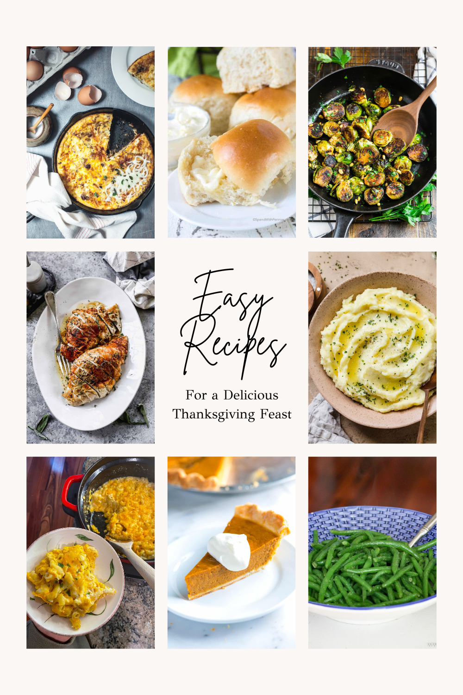

The Food the was made from the first Thanksgiving in 1621 is still used till this day.
For example turkey, corn, barriers, and pumpkins these are still used in the same way
or in other dished made this these ingredients. Other side dishes they had were
nuts, roots, and grains but they didn't have modern foods like cranberry sauce,
mashed potatoes, and pumpkin pie like today how we have more variety of foods. Thanksgiving
still uses the main dishes from the past till today and still keeps its traditional and
modern dishes. The dishes for Thanksgiving really started to change once it became
a main holiday and people from different parts of the world would make thanksgiving
food with the resources around them that really changed the traditional sided of the food.
During the 20th century stores had canned and premade food that made it east to make thanksgiving
food compared to before where the had to catch everything but we still have to prepare the food
like normal.

The food shown is the more modern side of what thanksgiving food is
now and with the internet now you have find different Recipes needed
to make the food also to try something new. The more modern side of
the food now still uses some of the original ingredients like the pumpkin
pie and grains. But with Turkeys they can be bought in stores but need to
be seasoned and cooked yourself and that could take a long time.
The desert now used in todays Thanksgivings are more creative and more tasty
because of the more varity of ingredients used. It is a little more time consuming
but is worth it. But it could also be easier because most of the desert are sold
already made in stores. Deserts could take some time if you plan to make it yourself
but most of the items are in stores already so you would just need to buy the
ingredients.